Introducción a XHTML
XHTML
XHTML es un lenguaje similar a HTML, pero con algunas diferencias que lo hacen más robusto y recomendado para modelar páginas web. Esta sigla corresponde a eXtensible Hypertext Markup Language en inglés y significa algo así como Extensible Hypertext Markup Language en español [1].
Como sabes, hay muchas versiones de HTML que han cambiado significativamente desde la idea original. La web está creciendo muy rápidamente, evolucionando más rápido que el propio estándar HTML, con requisitos como la inclusión de video, sonido y animaciones complejas. Debido a esto, el propio lenguaje HTML ha sido superado por las necesidades de las empresas y los desarrolladores. Ha crecido muchas veces sin atender al plan maestro creado por el W3C [1].
XHTML es ir hacia atrás, tratando de recuperar los límites marcados por el estándar, pero también tratando de resolver diferentes casos de uso de HTML, y preparándose para adaptarse a las nuevas necesidades y tendencias tecnológicas [1].
Información general
XHTMLfue desarrollado para extender HTML y permitir la compatibilidad con nuevos formatos de datos como video, imágenes y lenguajes de secuencias de comandos. HTML siempre se ha basado en SGML y ha sido relativamente complejo, por lo que un metalenguaje de marcado limitado como XML demostró ser suficiente para definir la estructura básica y las posibilidades sintácticas de XHTML. La especificación XHTML 1.0 fue publicada por W3C en 2002. El trabajo en la versión 2.0 se interrumpió a fines de 2009, ya que el Grupo de trabajo de tecnología de aplicaciones de hipertexto web (WHATWG) estaba trabajando en HTML5 al mismo tiempo, y finalmente prevaleció este último [2].
La base del XML>
Una de las tecnologías que más ha llamado la atención de los desarrolladores de estándares abiertos para la web es XML. Es un lenguaje de marcado que sirve de base para la creación de otros lenguajes interdisciplinarios que resuelven las múltiples necesidades de documentación de grupos de diferente tipo de información nueva. Compañía [1].
XML es un lenguaje que utiliza etiquetas como HTML, pero las reglas para la creación de documentos son mucho más estrictas que las del propio lenguaje HTML, por lo que puede ser procesado automáticamente por programas informáticos. Es este pequeño detalle el que subyace al conjunto de ventajas que hacen de XML una herramienta ideal en la actualidad. La información fluye a través de las fronteras ya través de redes globales, y XHTML busca aprovechar estas ventajas [1].
Nota: No sirve de nada tratar de explicar brevemente qué es XML aquí. Especialmente cuando hay disponible un Manual Introducción a XML que lo explica todo muy bien.
Por tanto, podemos decir que XHTML es la versión XML de HTML. Desde la perspectiva de un desarrollador, XHTML hereda el rigor de XML, lo que permite que los documentos XHTML se escriban de acuerdo con estándares específicos en lugar de hacerlo a la manera de HTML. Este detalle puede parecer una limitación al principio, pero en realidad tiene muchas ventajas [1].
• Su contenido puede ser procesado por cualquier programa informático (similar a XML).
• Los navegadores no tienen que preocuparse por interpretar lo que los desarrolladores quieren escribir o corregir posibles errores de código, como lo hacen con HTML [1].
Características principales de XHTML
Para ser compatible, un documento XHTML que sea un documento XML debe:
. El elemento raíz del documento debe ser <html>.
. El elemento raíz del documento debe especificar el espacio de nombres XHTML en el atributo xmlns (XMLNAMES). El espacio de nombres XHTML es http://www.w3.org/1999/xhtml.
. La declaración DOCTYPE debe preceder al elemento raíz del documento. El identificador público incluido en la declaración DOCTYPE debe hacer referencia a uno de los tres DTD anteriores, de la siguiente manera:
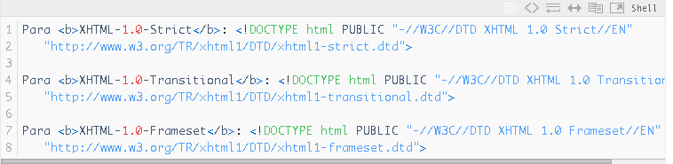
Aquí hay un ejemplo de un pequeño documento XHTML.
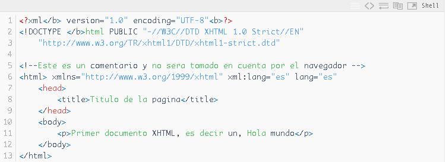
Analicemos el código línea a línea:
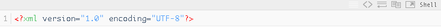
Esta es una declaración XML que especifica el atributo de codificación con el valor UTF-8.
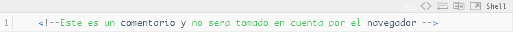
Este es el encabezado que deben tener todos los documentos XHTML 1.0 estrictos, según la especificación W3C. Esta es una advertencia para informarle qué tipo de documento está tratando de interpretar el agente de usuario. En concreto, es un documento de tipo strict.dtd, por lo que utiliza únicamente elementos que forman parte del lenguaje XHTML 1.0. Declarar estrictamente su documento usando las etiquetas antiguas hará que su página XHTML no sea válida [3].
Los comentarios inician con (los saltos de línea no los quiebran).Los agentes de usuario los ignoran. Es decir, no se interpretan (es decir, se representan) y, a menudo, se utilizan para proporcionar explicaciones en el código [3].
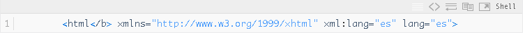
Comience su documento XHTML aquí. Todos los documentos deben tener esta etiqueta de apertura ( <html> ) y deben terminar con una etiqueta de cierre. En este ejemplo, se encuentra al final del código (</html> ). Además, se muestran tres atributos. El primero indica el tipo de documento, el segundo y tercero debe tener el código del idioma en que está escrito. Para el español, este valor es «es». Puedes ver el código para otros idiomas [3].
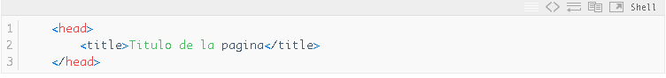
La etiqueta de apertura inicia el llamado encabezado de la página web. Las especificaciones específicas y otra información META sobre el documento se proporcionan aquí. Más sobre esto más adelante. Debajo están los elementos utilizados en el ejemplo, incluida la etiqueta <title> </title> que rodea el título de la página. Los navegadores normalmente lo muestran como el título de la ventana. También lo utilizan los motores de búsqueda cuando presentan resultados de documentos a los usuarios [3].
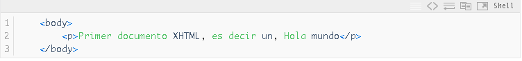
El cuerpo que comienza con <body> contiene todo el contenido que será representado por el agente de usuario. En nuestro ejemplo sólo utilizamos una etiqueta más, <p> que sirve para encerrar párrafos. [3].
Cerrando el cuerpo (</body>) y el documento XHTML (</html>) conseguimos nuestra primer página [3].
Sintaxis de las etiquetas XHTML
El lenguaje HTML original era muy permisivo en la sintaxis, permitiéndole crear su propio lenguaje HTML. Las etiquetas y los atributos se pueden utilizar de muchas maneras. Por ejemplo, puedes escribir una etiqueta Mayúsculas, minúsculas e incluso caracteres mixtos. el valor de los atributos de etiqueta se puede especificar con o sin comillas ("), y su orden es abrir y cerrar la etiqueta, no importaba [1].
La flexibilidad de HTML puede parecer una ventaja, pero el resultado final es una página
El código HTML es desordenado, difícil de mantener y muy poco profesional.
Afortunadamente, XHTML resuelve estos problemas agregando ciertas reglas de la forma:
Escribir etiquetas y atributos [1].
Aquí hay cinco limitaciones básicas que presenta XHTML.
HTML para la sintaxis de etiquetas:
1) Las etiquetas se tienen que cerrar de acuerdo a como se abren:
Ejemplo correcto en XHTML:
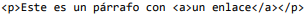
Ejemplo incorrecto en XHTML (pero correcto en HTML):
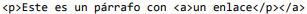
2) Los nombres de las etiquetas y atributos siempre se escriben en minúsculas:
Ejemplo correcto en XHTML:
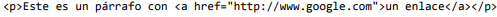
Ejemplo incorrecto en XHTML (pero correcto en HTML):
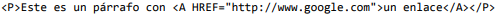
3) El valor de los atributos siempre se encierra con comillas:
Ejemplo correcto en XHTML:
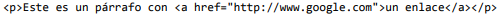
Ejemplo incorrecto en XHTML (pero correcto en HTML):
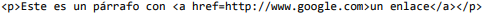
4) Los atributos no se pueden comprimir:
Ejemplo correcto en XHTML:
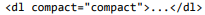
Ejemplo incorrecto en XHTML (pero correcto en HTML):
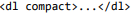
Este tipo de atributo cuyo nombre coincide con su valor no es muy común.
5) Todas las etiquetas deben cerrarse siempre:
La mayoría de las etiquetas HTML incluyen contenido de texto entre las etiquetas de apertura.
Fecha de cierre. Sin embargo, este no es el caso de algunas etiquetas especiales conocidas como "etiquetas vacías".
No es necesario incluir texto [4].
La etiqueta <body>por ejemplo, se utiliza para indicar el comienzo de una nueva línea, tal y como
se verá más adelante. Por sus características, la etiqueta <body> nunca encierra ningún contenido
de texto.
Como el estándar XHTML obliga a cerrar todas las etiquetas abiertas, siempre que se incluya la
etiqueta <body> se debería cerrar de forma seguida: <body></body>.para más código
XHTML fácil de escribir le permite escribir etiquetas en forma abreviada en tales casos.
Abrir y cerrar secuencialmente [4].
En lugar de abrir y cerrar de forma consecutiva la etiqueta (<br> </br>) se puede utilizar la
sintaxis <body /> para indicar que es una etiqueta vacía que se abre y se cierra en ese mismo punto.
En la forma compacta es habitual equivocarse con la posición del carácter / [4].
Ejemplo correcto en XHTML:
<body />
Ejemplo incorrecto en XHTML (pero correcto en HTML):
<body>
Además de estas cinco restricciones básicas, XHTML contiene otras modificaciones avanzadas.Acerca de HTML:
1 Todos los espacios se eliminan antes de acceder al valor del atributo.
Buscar antes y después del valor. También se eliminan todos los espacios comparado al resto de los valores de los atributos. En otras palabras,
Si el atributo contiene varios espacios seguidos, elimine todos menos uno
Un solo espacio utilizado para separar diferentes palabras [4].
2 Como se explicará más adelante al hablar de la etiqueta <script>, el código JavaScript
debe encerrarse entre unas etiquetas especiales () para evitar que el
navegador interprete de forma errónea caracteres como & y < [4].
3Las páginas XHTML deben omitir el atributo de nombre para identificar de forma única la página.
elemento. Siempre debe usar el atributo id en su lugar. Realmente
El atributo de nombre está en desuso en la versión 1.0 del estándar XHTML
etiquetas a, applet, form, frame, iframe, img y map [4].
Bibliografia
[1] “Qué es XHTML.” (accessed Aug. 13, 2022).https://www.ionos.es/digitalguide/paginas-web/desarrollo-web/soap-simple-object-access-protocol/
[2] “¿Qué es el lenguaje XHTML? - Ryte Digital Marketing Wiki.” https://es.ryte.com/wiki/XHTML (accessed Aug. 13, 2022).
[3] “Especificaciones y ejemplos de XHTML - Adictos al trabajo.” https://www.adictosaltrabajo.com/2007/03/01/xhtml/ (accessed Aug. 13, 2022).
[4] J. Eguíluz Pérez, “Introducción a XHTML”, Accessed: Aug. 13, 2022. [Online]. Available: www.librosweb.es.